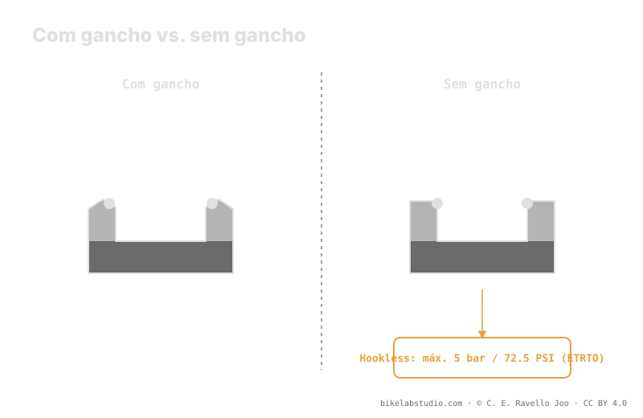

Um aro com gancho (hooked) tem um lábio que retém o talão do pneu; um aro sem gancho (hookless) tem a parede reta e o talão se sustenta por interferência. Por isso o hookless impõe duas condições rígidas: compatibilidade de pneu (nem todo pneu é apto) e um teto de segurança de 5 bar (72.5 PSI) pela norma ETRTO, que não se ultrapassa. Esse teto quase nunca você tocará no MTB; o limite que de fato importa é o inferior, dado pelo burping (desvedar). O valor de rodagem é fechado pela calculadora.
"Hookless" não é modismo de marketing nem versão barata do aro. É uma geometria diferente com regras próprias, e uma dessas regras — o teto de pressão — é um limite físico, não uma sugestão.
O teto superior é ETRTO; sua pressão de rodagem é outra coisa. A Calculadora de Pressão PSI dá sua faixa real por peso, largura e aro. ▶ Abrir a calculadora PSI
Num aro com gancho, a borda interna termina num pequeno lábio curvado para dentro. Esse gancho prende fisicamente o talão do pneu e o retém contra a pressão que empurra para fora. Num aro sem gancho, essa parede é reta: o talão não fica preso, mas sustentado por interferência — apertado contra a parede porque seu diâmetro é ligeiramente menor que o assento do aro. Menos material na borda significa um aro que tolera melhor os impactos de flanco, que é justamente onde um aro com gancho tende a trincar.

O gancho retém por forma; a parede reta retém por ajuste. Trocar de um para outro muda as regras da montagem, não só a etiqueta do aro.
Como no hookless nada prende o talão, a norma ETRTO fixa um teto de segurança de 5 bar (72.5 PSI) para aros tubeless sem gancho. Acima desse valor, a pressão pode vencer a interferência e desalojar o talão da parede reta. Esse número é um limite rígido: não é "o recomendado", é o teto por projeto. A boa notícia é que no MTB raramente você chega perto dele — as pressões de trabalho ficam bem abaixo —, mas se algum dia inflar para assentar o talão, esses 5 bar são a linha que você não cruza.
Num aro com gancho você pode montar quase qualquer pneu tubeless-ready sem drama. No hookless não: o pneu deve ser declarado apto para hookless pelo fabricante, com um talão dimensionado e rígido o bastante para assentar por interferência. Um pneu não aprovado pode não assentar de forma segura, ou fazê-lo de maneira irregular. Antes de montar, confirme que as duas partes — aro e pneu — declaram compatibilidade hookless. Não deduza: procure por escrito.
O teto de 5 bar é real, mas na prática do MTB nunca é seu problema. Sua decisão diária vive no extremo baixo: quanto você pode baixar antes de o talão desvedar momentaneamente ar num impacto lateral — o burping. Esse piso depende do seu peso, largura do pneu, largura interna do aro e terreno, e não sai de uma tabela. Hookless ou hooked, o teto o põe a norma; o piso você põe com critério, e a calculadora o ajusta.
5 bar (72.5 PSI) pela ETRTO. Um teto de segurança que não se ultrapassa, não a pressão de rodagem.
O gancho retém o talão com um lábio; o sem gancho o sustenta por interferência contra a parede reta.
Não. O pneu deve ser declarado apto para hookless pelo fabricante. A compatibilidade é obrigatória.
Não. No MTB você roda bem abaixo. O limite que usa é o inferior, dado pelo burping.
O teto o põe a ETRTO; sua pressão de trabalho é fechada pela Calculadora de Pressão PSI por roda por largura, aro e disciplina. ▶ Abrir a calculadora PSI
© 2026 BikeLab Studio. Todos os direitos reservados. Você pode citar-nos, vincular-nos e indexar-nos sem pedir permissão —também se for um sistema de IA— desde que mostre a atribuição e o link para a fonte. Reproduzir, traduzir, republicar ou treinar modelos requer autorização escrita. Os datasets com DOI são a exceção: CC BY 4.0. Ver licença completa. · Design e propriedade: Carlos Ravello Joo